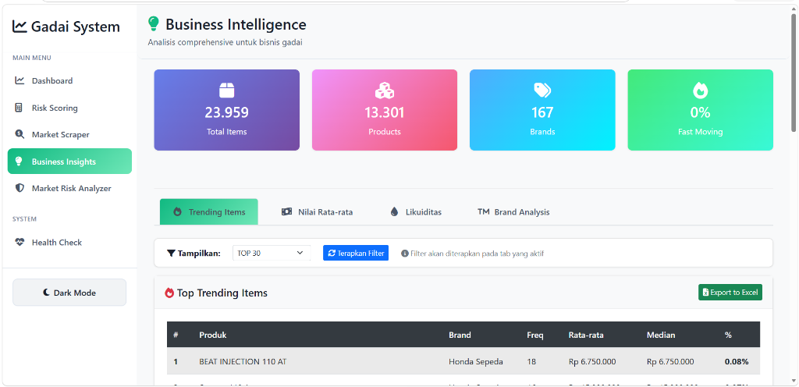

Risk Scoring & BI Platform
Sahabat Gadai Risk Scoring & Business Intelligence Platform

Sahabat Gadai Risk Scoring & Business Intelligence Platform adalah sistem berbasis web yang dikembangkan untuk mendukung proses operasional bisnis gadai melalui otomatisasi data pelanggan, analisis risiko, dan monitoring performa bisnis secara real-time.
Sistem dilengkapi teknologi Optical Character Recognition (OCR) yang memungkinkan data identitas pelanggan diekstraksi secara otomatis dari dokumen yang diunggah, sehingga proses input data menjadi lebih cepat, akurat, dan efisien. Selain itu, platform juga menyediakan dashboard Business Intelligence dan modul Risk Scoring untuk membantu perusahaan melakukan analisis risiko, memantau performa produk, serta memperoleh insight bisnis berbasis data.
- OCR-Based Customer Registration: Registrasi nasabah baru secara instan berbasis Optical Character Recognition dokumen ID.
- Automatic Identity Data Extraction: Ekstraksi data NIK, Nama, dan informasi identitas otomatis dari foto KTP/SIM yang diunggah.
- Smart Form Autofill: Pengisian otomatis form registrasi setelah ekstraksi OCR selesai untuk meningkatkan kenyamanan pengguna.
- Risk Scoring Engine: Modul analisis kelayakan kredit dan kalkulasi skor risiko nasabah sebelum transaksi gadai disetujui.
- Business Intelligence Dashboard: Visualisasi analitis untuk memantau performa operasional bisnis secara komprehensif.
- Product Performance Analysis: Analisis mendalam kinerja dan kontribusi profitabilitas setiap kategori produk gadai.
- Market Intelligence & Scraping: Sistem pemantauan harga pasar barang gadai (seperti gadget/emas) menggunakan data scraping otomatis.
- Brand Analysis: Evaluasi pergerakan harga pasar barang berdasarkan merek/brand terpopuler.
- Liquidity Analysis: Analisis likuiditas aset gadai dan manajemen tingkat perputaran dana perusahaan.
- Business Health Monitoring: Pemantauan indikator kesehatan finansial dan operasional bisnis gadai secara terpadu.
- Interactive Data Visualization: Grafik dan chart dinamis yang mempermudah pembacaan tren pergerakan metrik bisnis.
- Export & Reporting System: Fitur ekspor data dan pembuatan laporan analisis risiko serta performa bisnis siap saji.
- Optical Character Recognition (OCR): Teknologi pengenalan karakter berbasis AI untuk mendeteksi dokumen teks dalam gambar.
- Document Data Extraction: Ekstraksi entitas kunci secara cerdas untuk memisahkan nama, alamat, dan nomor identitas nasabah.
- Computer Vision: Pemrosesan gambar untuk mendeteksi kualitas dan keaslian orientasi dokumen identitas.
- Risk Classification: Klasifikasi tingkat risiko nasabah (Low, Medium, High) menggunakan model machine learning.
- Predictive Analytics: Analisis prediktif terhadap tren pergerakan harga barang jaminan di pasar bebas.
- Market Trend Analysis: Deteksi dini fluktuasi harga pasar sekunder barang gadai untuk meminimalkan risiko likuidasi.
- Business Intelligence Analytics: Agregasi data performa penjualan dan profit untuk menghasilkan ringkasan visual analitik.
- Decision Support System: Sistem pendukung keputusan otomatis untuk persetujuan batas pinjaman maksimum bagi nasabah.
- Otomatisasi Input Data: Mengurangi proses input data pelanggan secara manual melalui OCR otomatis yang akurat.
- Proses Cepat & Efisien: Mempercepat proses registrasi nasabah dan verifikasi data administrasi sebelum bertransaksi.
- Analisis Risiko Terukur: Membantu perusahaan melakukan analisis kelayakan nasabah dan risiko kredit berbasis data.
- Monitoring Real-Time: Menyediakan insight performa bisnis dan pengawasan operasional harian melalui dashboard terintegrasi.
| Peran | AI Developer • Business Intelligence Developer • Full-Stack Developer |
| Klien / Instansi | Sahabat Gadai Project Integration |
| Tahun | 2026 |
| Tech Stack |
Python
Flask
OCR Technology
Computer Vision
Machine Learning
Pandas & NumPy
SQL Database
JavaScript / HTML5 / CSS3
|